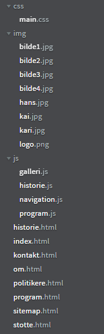
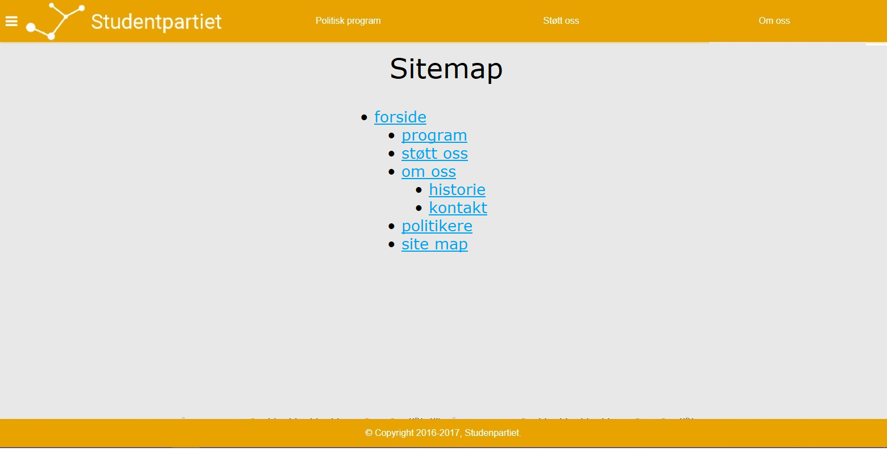

Project Design
Ole Fredrik Borgundvåg Berg, Olav Håberg Dimmen, Kasper Maagerø Svendsen, Andreas Jensen Jonassen and Liam Svanåsbakken Crouch
25.09.2017
Administrative Details
Our client is named Ragnhild Kristensen, and is the chief of communication at Studentpartiet. She is also a public communication student at NTNU.
Purpose
The purpose of the site is to spread information about Studentpartiet and it's political views, in order to get public support. It is also to make the audience more familiar with Studentpartiet's politicians. In other words, this page is primarily for people who might consider to support the party, and not the party's supporters themselves, however, the site is also for making supporters able to donate to the party and making them able to join the party. The voter participation rate is much lower for young adults than the overall population. This site is also for trying to make young people engage in politics in general, as that would mean a lager focus on student's interests.
Goals
The goal is to make a web site that makes people support and vote for Studentpartiet
Audience
-
Who are they:
Studentpartiet's primary audience is students, who are usually quite young (often between 18 and 30) and experienced at using the web.
-
What are the consequences:
- Having a modern and appealing appearance is prioritized over accessibility.
- Young people surfing on the Internet often use a short period of time on each website, therefore it is important to make the party's main political objective promoted on the front page, so that people who are just having a short visit get an intuition of the party's political views.
- Young people also usually use updated browsers, something that makes CSS-compability issues quite unlikely.
- Social media is quite important for young people, this site's main demographic, therefore it is important that the site links to Stundentpartiet's accounts on social media, and asks visitors to follow them.
- It has proven harder to get young people to the polls than the population overall, which makes it important that this site also promotes activism, and not just educate the audience about Studentpartiet's views.
Navigation
Navigation will primarily be through the navigation bar, which is on the top of every page.
The navigation bar is going to link to:
-
The frontpage:
Because it is important that the user may go back to the front page, in case they feel like they are lost.
The frontpage will link to the political program after the political objectives are listed, in case the visitors want to know more of Studentpartiet's political views.
-
The about site:
Because it is important that users find information about the party.
This site is going to link to the contact page and the history page of the site, as these pages give more detailed information about Studentpartiet.
-
The political program:
Because Studentpartiet is a political party, their political views are very important.
Navigation will also go through the footer. It will include a link to the contact page and social media, because that's a standard on web sites. It will also link to the site map, in case people on the web page are looking for something in particular.
We will also have a navigation bar on the side of the page, which opens when the users press the button, and this bar is going to link to every page, except the site map page.

Our navigation structure in a link map
File structure
Page Layout
-
Stylesheet use:
The site is going to have a main CSS file, called main.css, that includes the theme of the site.
-
Color scheme:
The background color of the page is very light gray, because it is important that the background doesn't steal to much of the audience's attention.
The standard font color is going to be dark gray. It's not quite black and white, because we wish to reduce contrast, so that you wouldn't be weary of reading. By going standard black and white, the design won't steal people's attention, and it gives a modern minimalistic appearance.
The navigation bar, buttons and icons will be in orange (#e9a301), because that is Studentpartiet's political color, and the page will remind people of them.
-
Font:
The primary font of the site is going to be Verdana.
The standard font size will be 12px.
-
Navigation bar:
The navigation bar is going to be at the top of the page, and link to the most important pages of the site.
The background color of the navigation bar will be orange, to as that is Studentpartiet's political color.
The navigation bar is going to consist of links in light gray staying on an horizontal line when the user is on desktop, and when on mobile the navigation bar will be a button you can press, and the menu will appear vertically below it.
We will have a vertical navigation bar on the left side of the page too, which appear when the user presses a button. This navigation bar is going to have a white background, and push the content of the page to the right.
-
Footer:
The footer is going to be on the bottom of every page, and have some contact info and link to social media.
The background color of the footer is going to be light gray, but darker then the rest of the background, and the font color is going to be dark gray.
This reduces the contrast to the rest of the content, so that it doesn't steal your attention and makes you less weary when you look at the page.
Content
-
Front page:
The page should contain a summary of the party's main political objectives and a photo gallery of smiling humans.
The summary of the main political objective is supposed to give visitors an intuition of what the party's political stances.
The pictures are bilde1.jpg and so on. The reason we use jpg is that it is the best format when having photos, because this have better color depth and thus represent the color on the photo better.
This page will also have a summary of Studentpartiet's main political objectives. They are going to be located beneath the photo gallery, so that visitors don't get overwhelmed by text. Each objective is going to be in a div with an orange background-color.
The photos of smiling humans are supposed to give the visitors positive connections to the party and it's politics
-
Contact page
The page should contain an address, a phone number, and an email address.
The page should also contain links Studentpartiet's accounts on different social media, like Facebook and Twitter.
The purpose of the page is to make it easy for visitors to contact the party if they have any questions about the party and it's political views. The point of the social media links is so that vistors may follow the party, for the latest news about them. Furthermore social media is the prefered communication channel for the youths, the site's main demographic.


-
Political program
The page should contain Studentpartiet's political views and a way to compare those views to that of other political parties.
The purpose of this page is to make the party's political views easily accessible if people wonder what the party's views are in one certain area, and how they compare to those of other parties. This is only for people wondering what their views is in a certain area, the party's main political objectives are promoted on the front page.
The design of this site is going to be a headline at the top. Below it, we are going to have select elements, with labels of what they are for. Below that again, we have a button that get the application started.
The application is going to consist of a HTML table, with two columns and two rows. The first row is going to have the name of the respective parties, and the second row is going to have their views. The table is going to be styled with collapsed 2px solid black borders.
This is the page where the political comparison application will be located.

-
Our politicians
The page should contain pictures and a short summary of Studentpartiet's politicians, so that the visitors can learn to trust them, and eventually vote for them.
People usually trust people if they feel they know them on a deeper level, therefore this page intend to tell the personal stories of Stundentpartiet's politicians.
The page should also contain links to the politicians' accounts on social media, both so that people can get better acquainted with the party's politicians and so that people can get the latest news from their politicians and ask them questions if they have any.
The design is going to be the picture of several politicians smiling, and their story, as tiles.
The reason we use tile design, is that it will make the site more organized.

-
About page
The page should contain some basic information about the party.
As Studentpartiet is a brand new and mostly unknown party, this page is important, as the public would like some basic information about the party to understand it's history and it's goals.
Another purpose of this page is to make it clear to people that this is a serious party, when people hasn't heard of it before.
The design should be simple, as this should just be an overview page of the party. The idea is to not have much on the page, as the visitors shouldn't be overwhelmed with information.
Therefore the design would be a textbox with some information, and a picture of our logo next to it.
-
History page
The page should contain Studentpartiet's history on a timeline.
As with the about page, this page is to educate people about Studentpartiet, believing that it is easier for people to support them and understand why they fight if they know their history.
The design should have a timeline that consists of tiles, squares with information with an arrow towards the line, which appear when the user scolls down.
The purpose is to make a page that doesn't overwhelm the user by showing all the information at once, and to make it more exiting to read about their history by having animations.

-
Supporting page
The page should contain a way to donate to the party and a way to become a member of the party.
The page should also include dates for political meetings and demonstration, so that supporters find a way to promote the party's views, and people interested in the party find a meeting so that they can discuss the party's politics.
The page should also include open positions in the party, and ways to volunteer for the party. Among other things, they need someone volunteering as responsible for the web page, when this project is done
The purpose of this site is for supporters of the party to find way to help the party. It is also to promote activism among students, by helping them find ways to get their voices heard.
-
Site map
The page should contain a list of all the pages on this site. They will be sorted by hierarchy by what pages links to what pages.
The page would simply be an unordered list with unordered lists inside each other, as that is a simple, yet practical design.
The purpose of this page is so that visitors can find the page they are looking for, by having an easily read list.

Minimum requirements
-
Picture gallery:
This function is a picture gallery with transitions between different pictures.
The picture gallery is going to have two arrows for navigation. These will be on each site of the picture and will appear when the user hover the mouse over the picture. Because of this, the gallery will only have a still image on mobile
This will be made with HTML5 canvas. The arrows will appear when the mouseover function triggers on the canvas and disappear on mouseleave. To make the transition for the pictures, we will use window.setinterval and change the x-coordinate of the picture
-
Political comparison:
This function is that you have two select tags and a button. The first select tag has a number of policy areas where you might want to know Studentpartiet's opinion. The second select tag has a number of Norwegian political parties. When you click the button you get a comparison of Studenpartiet and the other party on that specific policy area
This will be made with JavaScript, with the different political views are laying in arrays. JavaScript is going to get the right value when the button is pressed, with the choices you made and add them into the HTML, and remove eventual political comparisons that are there already.
-
History line:
This function is that you have an vertical line in the middle of the web page, and when you are scrolling down new elements are appearing next to the line, with an animation.
This will be made with JavaScript, by having the different elements in an array, and get the scroll value when scrolling, and use it to add new elements along the line.
-
Navigation bar:
The navigation bar will be located via the button in the top left of the user's screen. This will give the user direct access to the other contents of the webpage.
Plan
| Creator | Task | File | Due date |
|---|---|---|---|
| Ole Fredrik | HTML kontaktside | kontakt.html | 20.10.2017 |
| Liam | HTML setup sitemap | sitemap.html | 20.10.2017 |
| Olav | Picture edit | All of the required images(jpg) | 20.10.2017 |
| Kasper, Andreas | CSS main stylesheet | main.css | 01.11.2017 |
| Ole Fredrik Berg | Picture gallery in HTML5 canvas and JavaScript | galleri.js and index.html | 05.11.2017 |
| Liam | History line | historie.js and historie.html | 05.11.2017 |
| Andreas | Navigation bar | navigation.js | 05.11.2017 |
| Kasper | Javascript application, html document, comparison of political views | program.js and program.html | 05.11.2017 |
| Olav | HTML setup Om, Politikere, Støtte | om.html, politikere.html, stotte.html | 05.11.2017 |